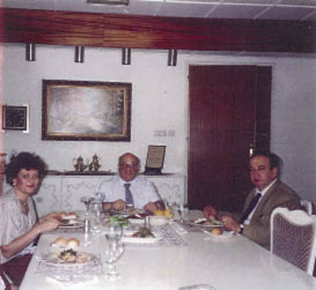

Denktaş 1995’te kalp rahatsızlığı geçirdikten sonra yoğun bir perhize başlamıştı. Fazla kilolarını atmış, adeta “tığ” gibi olmuştu. Bundan hem memnundu, hem de üzerindeki yemek baskısından yakınırdı. Yakınlarının çok iyi bildiği gibi Denktaş boğazına çok düşkündü. Belki yılların baskısı, belki alışkanlık, masada duran her şeyden atıştırırdı. Sanki konuşamadığı zamanlar, ağzını bu tür şeylerle oyalar, konuşmadıklarını içine atardı.
Yazları Kıbrıs’taki küçük evimize gittiğimiz aylarda, beni sıkça yazlık evine öğle yemeğine davet ederdi. Bu yemeklerde genellikle Denktaş ile yalnız olurduk. Sadece eşim Nuriye bana refakat ederdi. Nadiren de Başkan’ın “talebi üzerine” Kunter ve Barış da bize katılırlardı.
Yemekte, ben kendi bilgi alanım içindeki hususları Başkan’a sunardım. Denktaş’ın yaptığı ilginç değerlendirmelerini, rahat ve “gayri resmi” bir ortamda dinlemek, özellikle “Türkiye’den gelen bir meraklı” için unutulmayacak değerde anılardı. Hele bu insanın içine “Kıbrıs virüsü” de girmişse, iş daha da ilginç oluyordu.

Başkan Denktaş, Manisalı ailesi ile yazlıktaki evinde.
Denktaş rahatsızlığı öncesi yemeklerde, sorgusuz sualsiz, önüne getirilen her şeyi yerdi. Hatta ikinci yemeği de istediği olurdu. Rejime başladıktan sonra Başkan hiç alışık olmadığı şekilde “kayıt ve muhasara” altına girmişti. İlk aylarda özel doktoru yanından hiç ayrılmaz, diyet yemeğini titizlikle uygulatırdı.
Daha sonra özel garsonu, kısıtlamayı titizlikle sürdürmeye başladı. Bu dönemde Denktaş’la yediğim yemeklerde, önüne getirilen yarım porsiyon sebze yemeğini yüzünü asarak nasıl yediğini izlerken, Başkan yine de işi şakaya vururdu. Bana ve eşime normal yemek gelirdi. Ben de Başkan yarım porsiyon kabak yemeği yerken, şeftali kebabını karşısında bir türlü yiyemezdim, boğazımdan geçmezdi. Aslında öyle boğazıma meraklı bir insan olmadığım için, iki lokma atıştırsam yeterli olurdu.
Özel garsonu odadan çıkınca Başkan dayanamaz, bize getirilen yemekten de biraz alırdı. Bir de kulağımıza eğilir, “Onların haberi yok, dün gece kalktım, şunu şunu yedim,” diye iftiharla anlatırdı. Ben de her seferinde evden ayrılırken, özel garsonuna, “Aman dikkat edin, Başkan sizden habersiz yemek yiyor,” diye jurnal ederdim.
Zamanla bu konu, aramızda mizahi olarak algılanabilecek bir havaya dönüşmüştü. Ben jurnal ettikten sonra, garsonu herhalde Başkan’a “ikazını” yapar ve jurnalcinin ben olduğumu da söylerdi. Başkan bu “tatlı sinir harbini” galiba bilinçli olarak, nüktedan kimliğini de içine oturtarak, bizleri kızıştırmak için yapıyordu ya da gizli yemek yemenin “suçluluğunu”, Midas’ın Kulakları’ndaki gibi, birilerine söyleme ihtiyacını duyduğu için itiraf ediyordu.
Burada bile Denktaş’ın ince mizah anlayışını hissedersiniz. Teraziye koyduğunuzda, başkan olmanın rahatlığı mı, üzerindeki baskıdan kurtulmanın yolu mu, diye ölçersek hangisi ağır basar bilemiyorum.